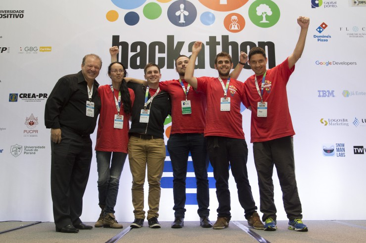

Alunos da Faculdade DezImpata vencem a 5.ª edição do Hackathon da FIESP
Um grupo de alunos da Faculdade DezImpata foi premiado na 5.ª edição do Hackathon, que aconteceu na cidade de São Paulo, cujo objetivo é reconhecer e divulgar soluções tecnológicas inovadoras.
Promovido pelo Comitê Acelera Fiesp (CAF) da Federação das Indústrias do Estado de São Paulo (FIESP), a edição desafiou os competidores a criar um aplicativo para dispositivos móveis com a temática Hackathon Maker: Internet das Coisas, Protótipos e Indústria 4.0.
Os participantes tiveram que desenvolver um sistema que solucionasse problemas na área de Mashups (como combinar diversos dispositivos em um para estimular a conectividade e a praticidade no dia a dia das pessoas?); Equipamentos urbanos (no futuro as cidades serão inteligentes. Como os equipamentos urbanos podem se comunicar com seus usuários?); e Wearables (as mudanças no setor vestuário: novas tecnologias e usabilidades para roupas e acessórios).
Os nossos alunos Júlio César dos Santos e Wilder Roberto Ramos Pereira e o ex-aluno Jean Pierre Ferreira da Silva, que integraram a equipe Greenbox, venceram a categoria Mashups com o projeto de uma plataforma para educar e ajudar a criar um modo seguro e interativo de usar a tecnologia a favor da educação, trazendo para o mundo real elementos de jogos virtuais.
edição, que teve duração de três dias, premiou cada integrante com um tablet, além do compromisso com a aceleração dos projetos pelo CAF. Os ganhadores poderão ainda participar da 9.ª edição do Concurso Acelera Startup da Fiesp.
Nós, da Faculdade DezImpata, estamos muito orgulhosos de ver que nossos alunos não só estão colocando em prática todo o aprendizado obtido em sala de aula, como também contribuindo para a construção de uma sociedade melhor.
 Universidade lança série de vídeos tutoriais para alunos
Universidade lança série de vídeos tutoriais para alunos


Veja Mais
Copyright © 2017 - Faculdade DezImpata